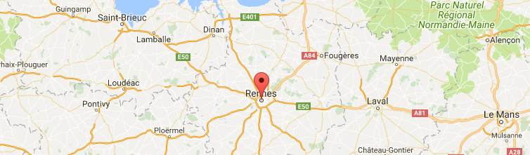

<div id="connect-modal">
  <div class="header-modal d-flex justify-content-between">
    <div class=""></div>
    <span class="">How to use Geocarte?</span>
    <i class="fa fa-close close-icon" (click)="onNoClick()"></i>
  </div>
  <div md-dialog-content>
    <ngb-accordion #acc="ngbAccordion">
      <ngb-panel title="Afficher une carte postale à partir d'un marqueur">
        <ng-template ngbPanelContent>
          <div class="card">
            
            <div class="card-block">
              <div class="alert alert-info" role="alert">
                <strong>Afficher une carte!</strong> This alert needs your attention, but it's not super important.
              </div>
            </div>
          </div>
        </ng-template>
      </ngb-panel>
    </ngb-accordion>
  </div>
</div>
